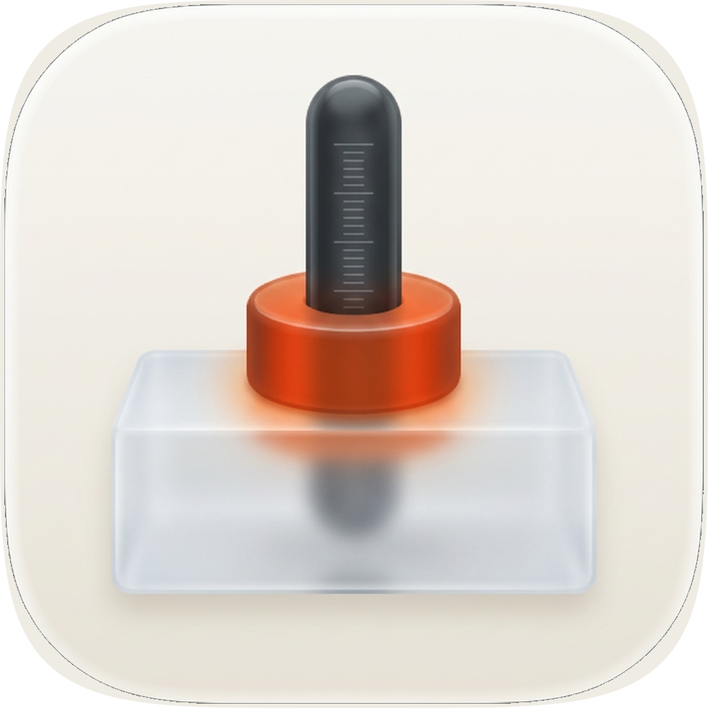
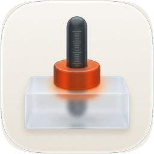
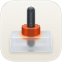
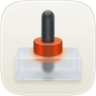
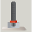

token-discipline when this commission ran; the artwork is unchanged.
| Take | Renders at 128 / 64 / 48 / 32 / 16 css px (2× retina sources), plus the 16px squint magnified | Rubric | Verdict |
|---|---|---|---|
C · raster, squircle-maskedGemini 3 Pro with two corpus exemplars as referenceImages, masked through icon-engineC-raster-9a63f7-masked.svg — SHIPS (icon.png / icon-256.png / icon-128.png render from it) |
   |
11 / 12 | Won the material read at 1024 and 256, and it is the signature detail that decides it: vermilion blooms warmly into the frosted guide exactly where the collar seats, and the shaft's tip stays dimly visible inside the translucent block. That is authored overlap between real layers, the one thing the corpus says a flat pre-masked raster cannot fake — and here the raster faked it, because the generator rendered the glass rather than compositing it. Checks 1–4 hold on the small renders above: masked to the set superellipse so the silhouette is identical to every sibling's, the collar is the widest step so the eye lands on what stopped the travel, and at 16px the stem, the vermilion band and the pale block below it all survive. Liabilities: it is a raster, so it cannot be re-coloured or re-laid-out as shapes; the guide is drawn in three-quarter perspective where the rest of the set is flat-on, which is a register inconsistency; and a faint seam from the source's own baked corner survives the porcelain fill at the extreme tile edge, visible at 1024 and gone by 256. |
A · icon.svgEngine A, hand-authored layered SVG from build_icon.py, four groups mapping 1:1 onto #bg/#mid/#fg/#highlight — retained as the vector alternative, not shipped |
|
9 / 12 | Compositionally clean, squircle-correct and the only take that is editable as shapes; it took three rounds to stop reading as the wrong object — first a chess rook, because the shaft stopped at the collar instead of running through the guide, then a sword, because the shaft was long and thin with the collar reading as a crossguard. It is not materially flatter than C, and that is the commission's most transferable finding: the fidelity run below measures A's own self-contrast higher than the shipped raster's at every size (0.491 against 0.450 at 1024, 0.469 against 0.408 at 16), which is the opposite of this skill's usual result. What holds it at 9 is check #4, and the weakness is visible in this row: the frosted guide washes out against the porcelain below 64px, so at 48, 32 and 16px the take reads as a shaft and a collar with no base under it. Two repairs were built and measured — an opaque beige guide body with a heavier rim, then a dark plinth band along the guide's foot — and both fixed the eye and were rejected by the gate, because the reference's own base is translucent glass, so anything that gives A's base solid value moves it away from the artifact the gate scores against. The first also erased the shaft-inside-the-glass overlap, which is A's stated signature. A stays at round 3 and carries the weakness in the open. |
B · icon-engineB-arrow-cdd192.svgEngine B, Arrow vector take — loser, scored and kept |
 |
5 / 12 | The miss of the set, and it fails a non-negotiable outright: no squircle at all, so it ships its own square artboard and the render above sits square-cornered beside two masked siblings. The ground is grey-green rather than the porcelain register, the fills are flat with no rim or contact family, and the base is a perspective slab that belongs to a different drawing. Nothing was salvaged into either surviving take. Kept and scored because it is the evidence that the vector engine did not reach the material bar on this commission, and a sheet that hides its losers is not an audit. |
icon.svg) retained as the layered vector alternative. Every icon in this marketplace is a decorative mark rendered to PNG rather than an Icon Composer package, so baked material is the correct trade here, and C's rendered glass and seated bloom are the better material read at the two sizes where that read exists. That choice rests on the comparison above and on the fidelity run below rather than on a hunch. Known liabilities, stated rather than buried: (1) the shipped file is a raster, so it cannot be re-coloured or re-laid out, and it hard-fails variant robustness the way every flat pre-masked raster does — icon.svg is the answer if a Dark, Clear or Tinted rendering is ever needed. (2) C's guide is a three-quarter view where the rest of the set is flat-on. (3) A faint seam from the source raster's baked corner survives at the extreme tile edge at 1024. (4) A's frosted guide is not legible below 64px, so the vector alternative is not a menu-bar-size substitute as it stands. (5) No blind panel judged this commission; the scores are one assessment, and the fidelity numbers below are the numpy tier only — luminance, SSIM and edges, with no torch or LPIPS on this machine — which is documented as blind to exactly the material differences the decision turned on.| Round | 1024 | 256 | 128 | 32 | 16 | mean | gate |
|---|---|---|---|---|---|---|---|
| round 0 — A at round 3, the take that stands | 0.5800 | 0.5629 | 0.5597 | 0.8110 | 0.8810 | 0.6789 | — |
| round 4 — guide given real value mass (opaque body, heavier rim) | 0.5771 | 0.5558 | 0.5489 | 0.8068 | 0.8688 | 0.6715 | REJECT, net −0.0372 |
| round 5 — translucency kept, dark plinth band along the guide's foot | 0.5714 | 0.5465 | 0.5429 | 0.8086 | 0.8666 | 0.6672 | REJECT, worse than 4 at 1024/256/128 |
material-recipes.md. Mask IoU is 1.00 at every size and edge F1 is 1.000 at 16px, so the two takes agree on silhouette exactly and the composite is carried by the small sizes, which is where a marketplace icon lives. Edge F1 of 0.063 at 1024 is the real gap and it is not a material gap: A is orthographic and flat-on, C drew a three-quarter perspective with a cylindrical collar and a box guide, so they are different drawings of the same object and no parameter edit converges one onto the other. Closing it would be a redraw, not a loop round. Run directories, per-round score.json, residual and edge maps are in fidelity/round0, fidelity/round4 and fidelity/round5.icon-engineC-raster-9a63f7-masked.svg is 1.08 MB of base64 JPEG inside a clipPath, and fidelity.py structure rejects an <image> element outright as the metric-gaming exploit, on top of failing the 200 KB envelope and carrying no named layer groups. Nothing about that is fixed here. What changed on 2026-08-19 is only its name: it was icon-raster-masked.svg, which reads as a master and put it in the checker's icon*.svg master glob, and it is now named as the Engine C take it actually is, beside the icon-engineC-raster-9a63f7.jpg it masks. icon.svg, the one genuine SVG master here, passes the same gate cleanly at 2 paths, 6 gradients, 4 named groups and 12 KB. The underlying consequence stands: this plugin ships a raster and has no vector master behind the shipped file, so the file cannot be re-derived, re-coloured or re-laid out, and the marketplace's variant-robustness liability applies to it in full.audit_sheet.py check, which the previous version could not pass: every one of its fifteen images was an inline data: URI, so the page weighed 1.6 MB and displayed nothing from disk, its scores were not in a form any gate could read, and it carried no 1024 hero. The renders it inlined were the same three takes at 1024/256/128/32/16, and they are now on disk in audit-renders/ at 1024/256/128/96/64/32 with a manifest recording each take's source, which is also how the 48px row arrived. The three scores are the commission's own and were not re-judged; the verdicts are rewritten from icon-notes.md, which is the later and fuller record, and they correct the old page on two points it got wrong: it stated that the fidelity loop had not been run, when three rounds are on disk in fidelity/, and it described take A as “materially flatter than C”, which those runs measure as false. The loose _a*.png, _b*.png, _r*.png, _c*.png, _*sq*.png and _contact-sheet.png files in this directory are the commission's original renders under a private naming scheme — _a take A, _b take B, _r take C as shipped (_r1024.png is byte-identical to icon.png), _c the raw unmasked generation — kept as the record and superseded for display by audit-renders/.icon-directions.md (mask discipline, grid adherence, silhouette, 16px squint, single light model, palette economy, figure-ground, depth coherence, era coherence, variant robustness, personality, no-text) — checks 1–4 non-negotiable, delivery bar ≥10/12. Raster takes audited on their squircle-masked 1024 versions. Renders produced by python3 audit_sheet.py render <dir> at 1024 / 256 / 128 / 96 / 64 / 32 sources through rsvg-convert, displayed at 128 / 64 / 48 / 32 / 16 css px, and verified by its check subcommand. Fidelity scores from fidelity.py, numpy tier (no torch, so luminance + SSIM + edges only).